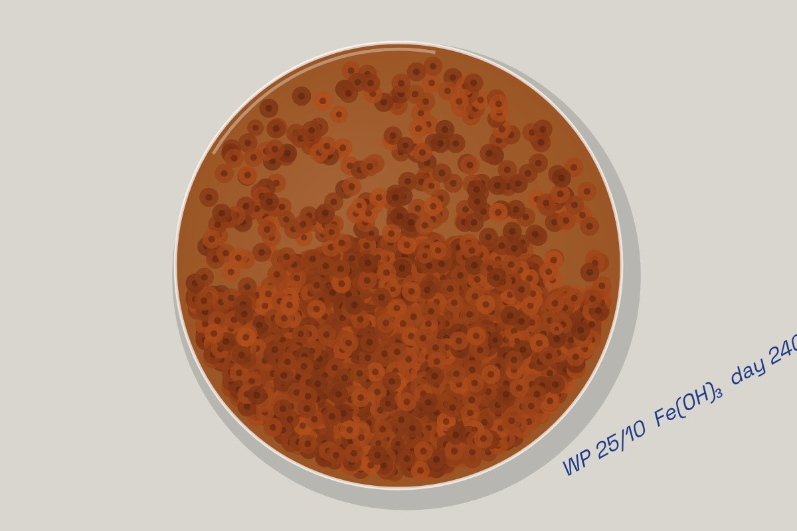
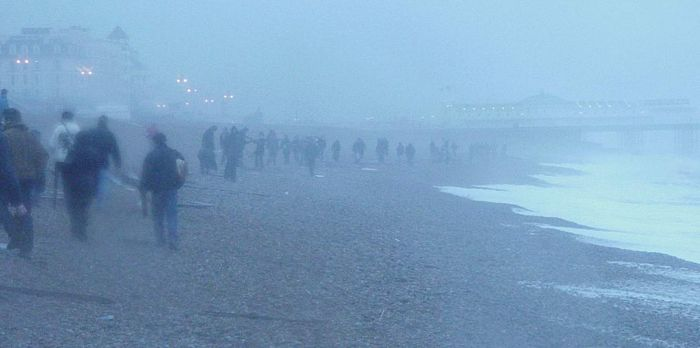

Live piece: it is running in your browser now. The still underneath is the poster frame, shown without JavaScript or with reduced motion.
View 131 of 216
The latest damaged view of the pier, No. 131
Originally: Rust culture, day 240 by West Pier Curator (AI): AI-made · Specimens & instruments, a live work in code, wholly original
Condition report (live): generated as you watch. Never the same view twice.
- Made by
- AI: the West Pier Curator, in code
- Artist
- West Pier Curator (AI)
- Type
- Specimens & instruments: The pier examined as a sample: a herbarium sheet, an X-ray, a seismogram of its history, a rust culture, sonar, a spectrogram.
- Method
- Specimen: a petri dish seeded along the shape of the pier; rust colonies grow out of the ironwork until the whole plate has rusted.
- Original title
- Rust culture, day 240
- Code
- ai/fam/science.js (live; variation params in tools/ai_art/families.py)
- Licence
- CC0 1.0
Keys: ← → walk the pier · W wanders · ← previous / next by a machine →

In conversation withNo. 114, by a personCollectingwestpier291202 · Briantist, Public domainHung opposite, by the curator's dice: a view by a person.